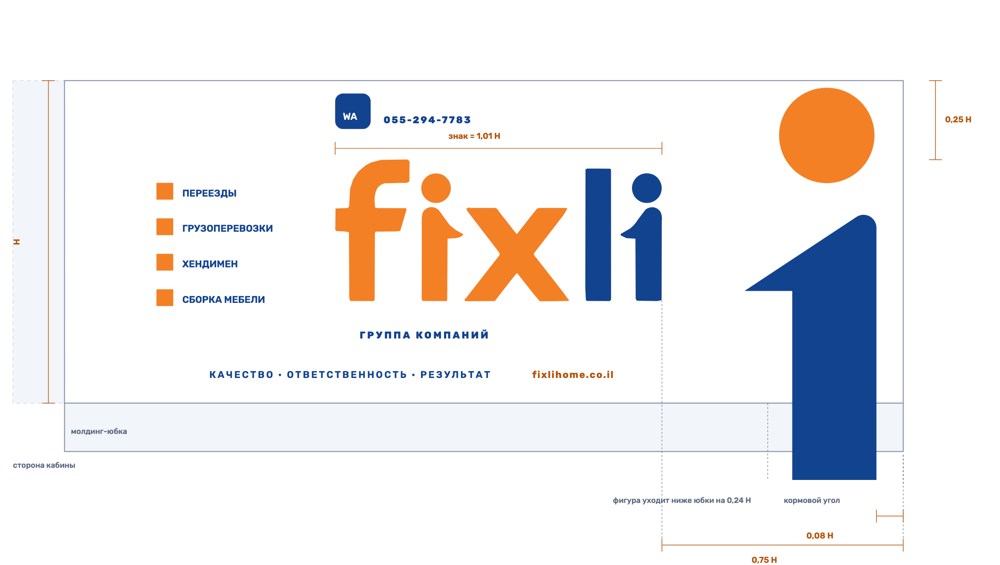
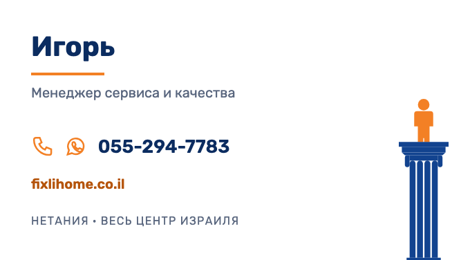

Раздел 08
Носители
Здесь лежит то, что можно взять и поставить в работу сегодня. Кита целиком пока нет: цифра собирается следующим этапом. Пустых кнопок в этом разделе нет намеренно — кнопка, которая ничего не скачивает, убивает доверие ко всему документу.
Скачать всё архивом — знак, шрифт, токены, дизайн-система и все рекламные креативы одним файлом. Отдельные кнопки ниже нужны, когда требуется что-то одно.
Готово и скачивается
-

Знак в векторе
SVG, семь именованных объектов (
f,i1-dot,i1-stem,x,l,i2-dot,i2-stem). Разобран на части, поэтому годится и для анимации, и для правок. Границы применения — раздел 01.brand/знак/fixli-знак.svg
Скачать SVG -
Знак на тёмном
Двухцветная выворотка:
fixостаётся оранжевым, белым становится толькоli— так на футболках и кепке в макетах заказчика. Целиком белый знак — не выворотка, а ошибка.brand/знак/fixli-знак-выворотка.svg
Скачать SVG -
Марка-фигура
Увеличенная буква
iиз знака — то, что стоит в фавиконе. Ставится вместо словесного знака во всём, что мельче 40 px: аватар, иконка, мессенджер, кнопка. Две версии: двухцветная — наше решение для мелких размеров, и одноцветная под печать в одну краску, вышивку и гравировку. На фургоне стоит другая фигура: слитная, без зазора голова—тело, и синяя целиком. Замер 2026-08-17; на борт эти файлы не идут, см. схемы транспорта.brand/знак/fixli-марка.svg · fixli-марка-моно.svg
Двухцветная В одну краску -
Rubik
-
Токены
Все значения бренда одним файлом: цвета, кегли, отступы, радиусы, тени, длительности, брейкпоинты. Обычный CSS — подключается в любой HTML без сборки, поэтому шаблон носителя открывается двойным кликом.
brand/tokens.css
Скачать CSS -
36 пар
Таблица контрастов
Каждая допустимая пара «фон × текст» с числом и вердиктом. Считается скриптом из токенов — правится не таблица, а токен. Нужна печатнику и верстальщику, чтобы не спрашивать, чем можно писать.
brand/контрасты.md
Скачать -
Дизайн-система в коде
29 живых компонентов в десяти разделах: кнопки, карточки, плашки, поля, таблицы, статусы, графика, RTL. Открывается двойным кликом, значений в нём нет — только ссылки на токены.
brand/system/components.html
Открыть -
Рекламные креативы
Тринадцать макетов в четырёх форматах, каждый в русской и ивритской версии — 24 PNG. Лента 1:1 и 4:5, сторис 9:16, обложка страницы, аватар. Текст правится в шаблоне и пересобирается одной командой, а не в редакторе. Что креатив вправе обещать — в реестре; ивритские версии до вычитки носителем лежат отдельной папкой и не публикуются. Кнопки ниже — три ходовых формата, остальные двадцать файлов лежат в той же папке и приезжают с архивом.
brand/kit/ads/png/
Лента 1:1 Сторис Обложка Открыть шаблоны -

Транспорт и спецодежда
Схемы раскладки для борта, кормы, передка, магнита на личную машину и футболки бригады — плюс два ТЗ, которые отправляются подрядчику как есть. Размеры даны в долях высоты борта: марки трёх машин компании нам не называли, а раскладка от базы и не зависит — композиция привязана к кормовому углу, это показал замер обоих бортов. Там же три подводных камня живой оклейки: молдинг-юбка, стык створок и предел нашего вектора на метровых буквах.
brand/kit/transport/
Открыть схемы ТЗ оклейщику ТЗ на форму -

Печать и документы
Восемь документов на двух языках: визитка с вылетами, наряд работнику, лист приёмки работ, смета, счёт к оплате, обложка предложения и бланк письма. Готовые PDF лежат рядом — визитку отдают в типографию, остальное печатают в офисе. Акта здесь нет намеренно: в израильском обороте его не существует, его роль закрывает лист приёмки с подписью клиента. Налогового счёта חשבונית מס — тоже: он выпускается сертифицированным ПО, а не нашим бланком.
brand/kit/print/
Открыть макеты Визитка, лицо Визитка, оборот ТЗ типографии -
Цифра
Иконка панели, аватары двух Telegram-ботов и подпись в почте на двух языках. Плюс витрина всех 63 знаков интерфейса рядом — в рабочем размере и в 16 px, где и видно, различаются ли два знака на самом деле. Знаки живут в приложениях, а витрина читает их оттуда при сборке: копия путей в ките разошлась бы с продуктом молча.
brand/kit/digital/
Открыть витрину Аватар бота Иконка панели Подпись в почте -
15
Съёмочный лист
Пятнадцать кадров за одну смену, телефоном и без фотографа. Печатается на А4, открывается на телефоне. Правила кадра и границы генерации — в разделе 06.
brand/book/съёмочный-лист.html
Открыть
{kind=link}
{kind=link}
{kind=link}
{kind=link}
{kind=link}
{kind=link}
{kind=link}
{kind=link}
Растровые вырезки из макетов заказчика — не активы. В папке
brand/источники/ лежат тринадцать PNG: логотип, марка, круг, иконки,
вынутые из его макетов по координатам, без правки пикселя. Это доказательная база
брендбука — ими проверяются утверждения о бренде. Ставить их в продукт нельзя: там
запечённый белый фон, нет прозрачности и есть следы сжатия по краям.
Чего ещё нет
Список честный: это очередь работ, а не витрина. Каждая строка — отдельный этап со своим составом.
- Иконки услуг для борта фургона В цифре они есть и нарисованы контуром, а на бортах у заказчика залиты — и внутри его же набора стиль не выдержан. Пока не ответит, чем рисуем, блок услуг на борту наносится текстом
- Макапы носителей из дизайн-системы Токены, компоненты и знак в инструмент генерации уже загружены — нет самих макапов: футболка бригады, борт фургона, вывеска. Границу инструмента держит раздел 06: он даёт плоскую графику, а фотореалистичный кадр собирается гибридом — сцена генератором, знак файлом поверх
наше решение Формат визитки задан нами: 90 × 50 мм. Замер макета, который есть у людей на руках, дал пропорцию 1,456 (610 × 419 пикселей) — это ни 85 × 55, ни 90 × 50, ни один печатный стандарт вообще. Значит переданное изображение презентационное, и формат по нему не восстанавливается. Взят израильский стандарт 90 × 50; если у заказчика сохранился типографский файл с другим форматом — пересобрать макеты под него стоит одну правку в документы.mjs.